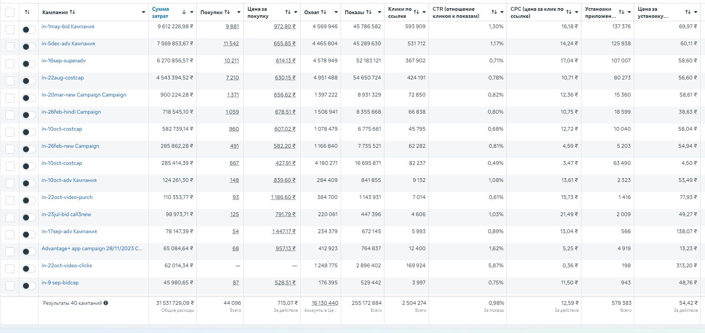

Кейс: 579 000+ установок и 44 000+ выданных займов
Как мы укротили перегретый аукцион Индии и победили нестабильный банковский скоринг

Ситуация на старте (Situation)
Продукт: Мобильное приложение для выдачи микрокредитов.
Специфика рынка: Доминирование Android-устройств, низкий ARPU и выраженная мультиязычность.
Контекст на старте: Основной объем трафика генерировал Google Ads, показывая понятные и стабильные объемы. В Facebook проводились только нерегулярные тестовые кампании инхаус-командой.
Техническая база: Трекинг реализован через AppsFlyer, работа велась исключительно с Android-приложением.
🎯 Задачи проекта
-
1Масштабирование: Превратить Facebook Ads в полноценный, прогнозируемый канал привлечения и выйти на стабильный выкуп трафика с большими бюджетами.
-
2Удержание KPI: Сохранять целевые метрики (CPA) в условиях высокой волатильности банковского скоринга (процент одобряемости плавал от месяца к месяцу и внутри недели).
-
3Конкуренция: Эффективно конкурировать в аукционе за качественный сегмент аудитории, способный пройти скоринг и фактически получить деньги.
🚧 Сложности проекта
• Плавающий процент одобрения. Уровень одобрения кредитов (approval rate) постоянно меняется, что требует непрерывного управления ставками.
• Специфика аудитории и ГЕО. Индия требует креативов на локальных диалектах, а займы берут под разные нужды (от ремонта до зарплаты). Нужна широкая сетка углов для пробития баннерной слепоты.
• Качество трафика и конкуренция. Рынок МФО перегрет. Кампании на инсталлы приводят неплатежеспособную аудиторию — нужно выкупать тех, кто реально пройдет сложный скоринг.
🛠 Действия и стратегия
Оптимизация на финальное действие
Ключевым техническим решением стала настройка кампаний на событие выдачи займа (Purchase). Если бы оптимизация велась на промежуточный этап (Lead), алгоритм не смог бы адаптироваться к волатильности скоринга — система приводила бы дешевые заявки с нулевым апрувом.
Матрица управления ставками
Для адаптации к изменениям апрува применялось чередование трех стратегий:
- 🔥 Bid Cap: Для агрессивного выкупа трафика в рамках KPI.
- 🛡 Cost Cap: Инструмент жесткого контроля рентабельности.
- ⚖️ Lowest Cost: Для сохранения минимальных объемов обучения.
Креативная стратегия
- Диверсификация: Ручные креативы + генерация нейросетями для масштабирования концепций.
- Локализация: Адаптация под основные региональные диалекты Индии.
📊 Результаты в цифрах
Сводные данные на основе 40 рекламных кампаний
💡 Итоговое резюме
Успешное продвижение финансовых приложений на рынке Индии требует жесткого контроля стоимости конверсии. За счет связки «Оптимизация на финальное событие + Динамический выбор стратегии ставок + Бренд-перформанс и нейросети» нам удалось нивелировать нестабильность банковского апрува.
Проект доказал, что даже в условиях волатильного рынка можно стабильно масштабироваться: Facebook Ads был успешно переведен в статус мощного и прогнозируемого источника трафика.
Как это работает технически?
В этом проекте я использовал алгоритм Lattice. Подробности в лонгриде.
Читать про метод